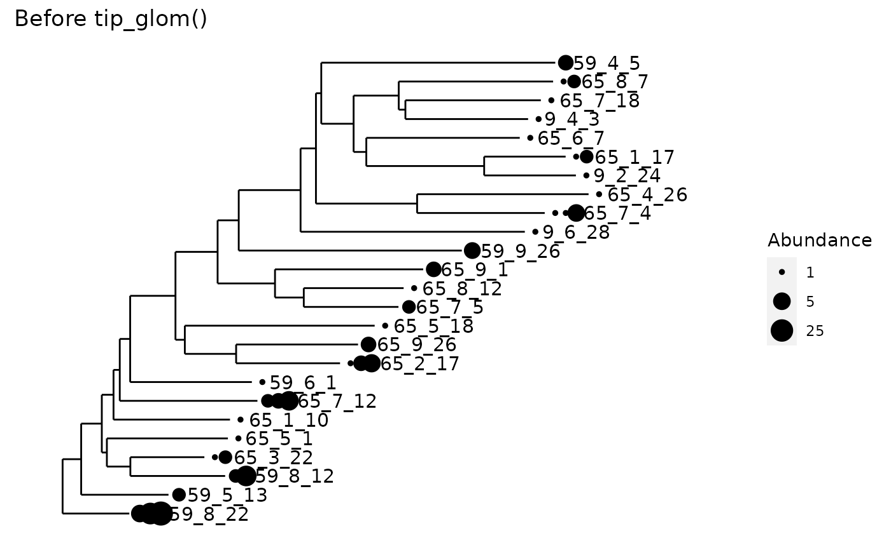
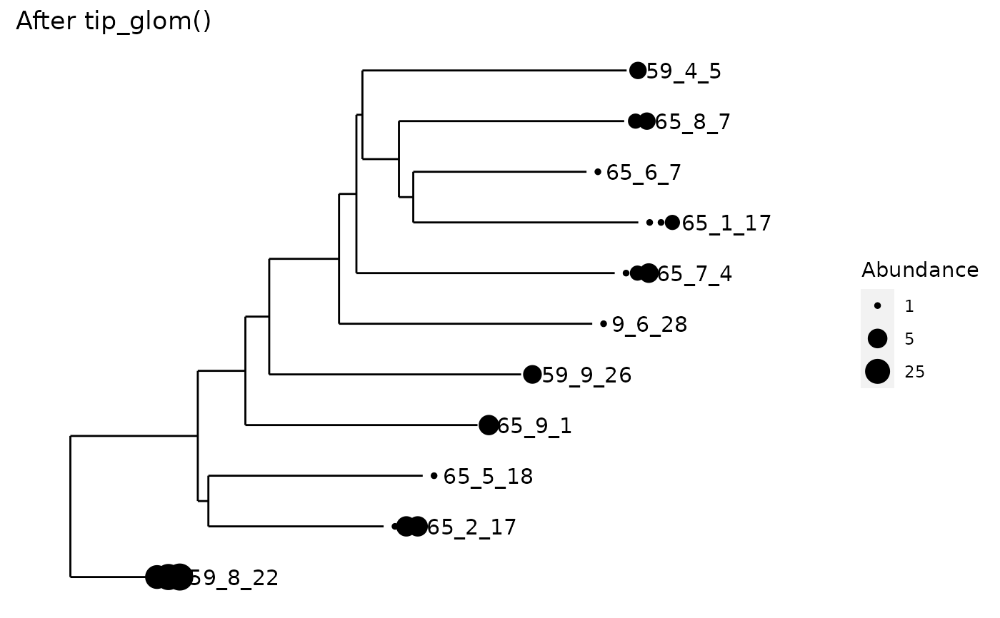

All tips of the tree separated by a phylogenetic cophenetic distance smaller
than h will be agglomerated into one taxon.
tip_glom(physeq, h = 0.2, hcfun = cluster::agnes, tax_adjust = 1L, ...)
| physeq | (Required). A |
|---|---|
| h | (Optional). Numeric scalar of the height where the tree should be
cut. This refers to the tree resulting from hierarchical clustering of the
distance matrix, not the original phylogenetic tree. Default value is |
| hcfun | (Optional). A function. The (agglomerative, hierarchical)
clustering function to use. The default is |
| tax_adjust | 0: no adjustment; 1: phyloseq-compatible adjustment; 2:
conservative adjustment (see |
| ... | (Optional). Additional named arguments to pass to |
An instance of the phyloseq-class(). Or alternatively, a
phylo() object if the physeq argument was just a tree. In the
expected-use case, the number of OTUs will be fewer (see ntaxa()), after
merging OTUs that are related enough to be called the same OTU.
Can be used to create a non-trivial OTU Table, if a phylogenetic tree is available.
By default, simple "greedy" single-linkage clustering is used. It is
possible to specify different clustering approaches by setting hcfun and
its parameters in .... In particular, complete-linkage clustering appears
to be used more commonly for OTU clustering applications.
The merged taxon is named according to the "archetype" defined as the the
most abundant taxon (having the largest value of taxa_sums(physeq). The
tree and refseq objects are pruned to the archetype taxa.
Speedyseq note: stats::hclust() is faster than the default hcfun; set
method = "average" to get equivalent clustering.
Acknowledgements: Documentation and general strategy derived from
phyloseq::tip_glom().
tree_glom() for direct phylogenetic merging
data("esophagus") esophagus <- prune_taxa(taxa_names(esophagus)[1:25], esophagus) plot_tree(esophagus, label.tips="taxa_names", size="abundance", title="Before tip_glom()")plot_tree(tip_glom(esophagus, h=0.2), label.tips="taxa_names", size="abundance", title="After tip_glom()")# *speedyseq only:* Demonstration of different `tax_adjust` behaviors data(GlobalPatterns) set.seed(20190421) ps <- prune_taxa(sample(taxa_names(GlobalPatterns), 2e2), GlobalPatterns) ps1 <- tip_glom(ps, 0.1, tax_adjust = 1) ps2 <- tip_glom(ps, 0.1, tax_adjust = 2) tax_table(ps1)[c(108, 136, 45),]#> Taxonomy Table: [3 taxa by 7 taxonomic ranks]: #> Kingdom Phylum Class Order #> 578831 "Bacteria" "Bacteroidetes" "Sphingobacteria" "Sphingobacteriales" #> 2801 "Bacteria" "Planctomycetes" "Planctomycea" "Pirellulales" #> 185581 "Bacteria" "Proteobacteria" "Gammaproteobacteria" "Oceanospirillales" #> Family Genus Species #> 578831 NA "Niabella" NA #> 2801 NA "Rhodopirellula" NA #> 185581 "OM60" NA "marinegammaproteobacteriumHTCC2080"#> Taxonomy Table: [3 taxa by 7 taxonomic ranks]: #> Kingdom Phylum Class Order #> 578831 "Bacteria" "Bacteroidetes" "Sphingobacteria" "Sphingobacteriales" #> 2801 "Bacteria" "Planctomycetes" "Planctomycea" "Pirellulales" #> 185581 "Bacteria" "Proteobacteria" "Gammaproteobacteria" "Oceanospirillales" #> Family Genus Species #> 578831 NA NA NA #> 2801 NA NA NA #> 185581 "OM60" NA NA